Contents
CHARGEMENT DE L IMAGE
close all clear all clc S = 0.1; I = imread('lena.tiff'); input_image_rgb = double(I); figure('Name','Image originale en couleur','NumberTitle','off'); imagesc(I);
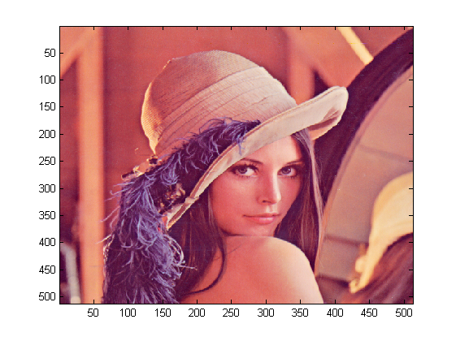
RGB -> YCbCR
input_image_ycbcr = rgb2ycbcr_(double(input_image_rgb)); input_image_y = input_image_ycbcr(:,:,1); input_image_cb = input_image_ycbcr(:,:,2); input_image_cr = input_image_ycbcr(:,:,3);
DCT
N = size(input_image_y,1);
M = 8;
T = N/M;
% perform DCT in 2 dimension over blocks of 8x8 in the given picture
dct_image_y = image_MxM_block_dct( input_image_y,M);
dct_image_cb = image_MxM_block_dct( input_image_cb,M);
dct_image_cr = image_MxM_block_dct( input_image_cr,M);
dct_image_order_y = dct_order(dct_image_y,M);
dct_image_order_cb = dct_order(dct_image_cb,M);
dct_image_order_cr = dct_order(dct_image_cr,M);
Affichage
clims = [ 0 255 ]; clims2 = [ 0 1 ]; figure('Name','Image originale et sa DCT','NumberTitle','off'); subplot(2,3,1); imagesc(input_image_y,clims); colormap gray; title( 'image Y'); axis image subplot(2,3,2); imagesc(input_image_cb,clims-128); colormap gray; title( 'image Cb'); axis image subplot(2,3,3); imagesc(input_image_cr,clims-128); colormap gray; title( 'image Cr'); axis image subplot(2,3,4); imagesc(dct_image_order_y); colormap gray; title('DCT de l image Y'); axis image subplot(2,3,5); imagesc(dct_image_order_cb); colormap gray; title('DCT de l image Cb'); axis image subplot(2,3,6); imagesc(dct_image_order_cr); colormap gray; title('DCT de l image Cr'); axis image
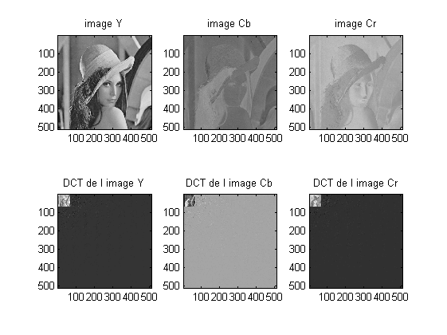
QUANTIFICATION
Qy = (1/S) .*[ 16 11 10 16 24 40 51 61;
12 12 14 19 26 58 60 55;
14 13 16 24 40 57 69 56;
14 17 22 29 51 87 80 62;
18 22 37 56 68 109 103 77;
24 25 55 64 81 104 113 92;
49 64 78 87 103 121 120 101;
72 92 95 98 112 100 103 99];
Qc = (1/S) .*[ 17 18 24 47 99 99 99 99;
18 21 26 66 99 99 99 99;
24 26 56 99 99 99 99 99;
47 66 99 99 99 99 99 99;
99 99 99 99 99 99 99 99;
99 99 99 99 99 99 99 99;
99 99 99 99 99 99 99 99;
99 99 99 99 99 99 99 99];
quantized_dct_y = quant_MxM_bloc_quant(dct_image_y,M,Qy);
quantized_dct_cb = quant_MxM_bloc_quant(dct_image_cb,M,Qc);
quantized_dct_cr = quant_MxM_bloc_quant(dct_image_cr,M,Qc);
quantized_dct_y_order = dct_order(quantized_dct_y,M);
quantized_dct_cr_order = dct_order(quantized_dct_cr,M);
quantized_dct_cb_order = dct_order(quantized_dct_cb,M);
AFFICHAGE
figure('Name','DCT originale et DCT compressee','NumberTitle','off'); subplot(2,3,1); imagesc(dct_image_order_y); colormap gray; title('DCT de l image Y'); axis image subplot(2,3,2); imagesc(dct_image_order_cb); colormap gray; title('DCT de l image Cb'); axis image subplot(2,3,3); imagesc(dct_image_order_cr); colormap gray; title('DCT de l image Cr'); axis image subplot(2,3,4); imagesc(quantized_dct_y_order); colormap gray; title( 'DCT compressee Y'); axis image subplot(2,3,5); imagesc(quantized_dct_cb_order); colormap gray; title( 'DCT compressee Cr'); axis image subplot(2,3,6); imagesc(quantized_dct_cr_order); colormap gray; title( 'DCT compressee Cb'); axis image
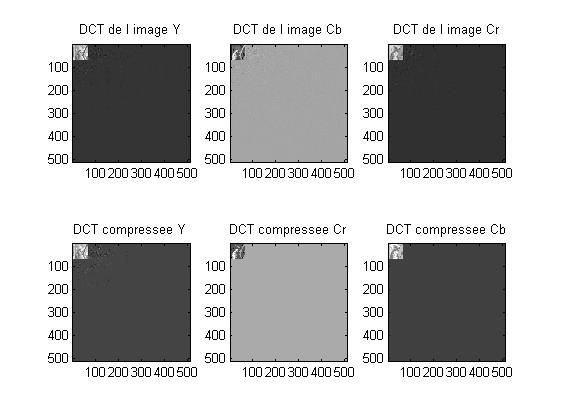
QUANTIFICATION INVERSE
iquant_image_y = quant_MxM_bloc_iquant(quantized_dct_y,M,Qy); iquant_image_cb = quant_MxM_bloc_iquant(quantized_dct_cb,M,Qc); iquant_image_cr = quant_MxM_bloc_iquant(quantized_dct_cr,M,Qc);
DCT INVERSE
output_image_ycbcr(:,:,1) = image_MxM_block_idct(iquant_image_y,M ); output_image_ycbcr(:,:,2) = image_MxM_block_idct(iquant_image_cb,M ); output_image_ycbcr(:,:,3) = image_MxM_block_idct(iquant_image_cr,M );
YCbCR -> RGB
output_image_rgb = ycbcr2rgb_(output_image_ycbcr) ;
AFFICHAGE
figure('Name','Image compressee et sa DCT','NumberTitle','off'); subplot(2,3,1); imagesc(quantized_dct_y_order); colormap gray; title( 'DCT compressee Y'); axis image subplot(2,3,2); imagesc(quantized_dct_cb_order); colormap gray; title( 'DCT compressee Cr'); axis image subplot(2,3,3); imagesc(quantized_dct_cr_order); colormap gray; title( 'DCT compressee Cb'); axis image subplot(2,3,4); imagesc(output_image_ycbcr(:,:,1),clims); colormap gray; title('Image Y compressee'); axis image subplot(2,3,5); imagesc(output_image_ycbcr(:,:,2),clims); colormap gray; title('Image Cb compressee'); axis image subplot(2,3,6); imagesc(output_image_ycbcr(:,:,3),clims); colormap gray; title('Image Cr compressee'); axis image figure('Name','Resultat de la compression','NumberTitle','off'); subplot(121) imagesc(input_image_rgb./255,clims2); axis image title('image originale') subplot(122) imagesc(min(max(output_image_rgb./255,0),1),clims2); axis image title('image compressee') SNR = 10*log10(sum(input_image_rgb(:).^2)/sum((input_image_rgb(:)-output_image_rgb(:)).^2)); disp(['SNR = ',num2str(SNR),' dB']);
SNR = 19.3173 dB
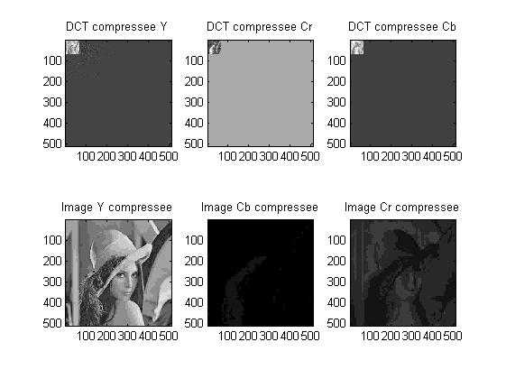
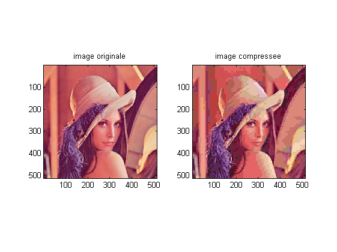
AFFICHAGE ZOOM
figure('Name','Zoom DCT Y','NumberTitle','off'); subplot(121) imagesc(dct_image_order_y(1:3*T,1:3*T)); title('DTC image Y : zoom'); axis image colormap gray; subplot(122) imagesc(quantized_dct_y_order(1:3*T,1:3*T)); axis image colormap gray; title('DTC compressee image Y : zoom'); figure('Name','Zoom DCT Cb','NumberTitle','off'); subplot(121) imagesc(dct_image_order_cb(1:3*T,1:3*T)); title('DTC image Cb : zoom'); axis image colormap gray; subplot(122) imagesc(quantized_dct_cb_order(1:3*T,1:3*T)); axis image colormap gray; title('DTC compressee image Cb : zoom'); figure('Name','Zoom DCT Cr','NumberTitle','off'); subplot(121) imagesc(dct_image_order_cr(1:3*T,1:3*T)); title('DTC image Cr : zoom'); axis image colormap gray; subplot(122) imagesc(quantized_dct_cr_order(1:3*T,1:3*T)); axis image colormap gray; title('DTC compressee image Cr : zoom');
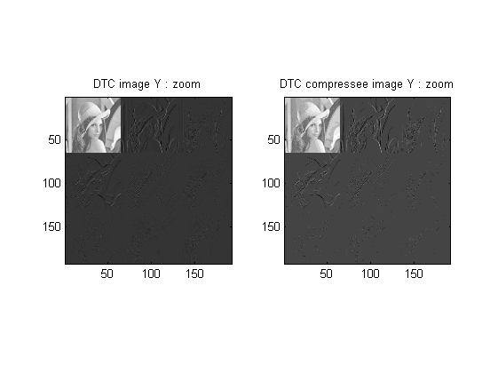
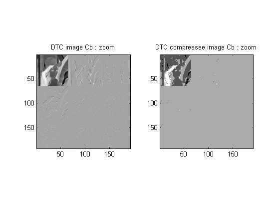
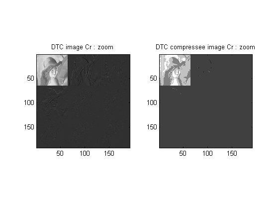
AFFICHAGE POUR UN BLOC
% m = input('indice de la ligne ? '); % n = input('indice de la colonne ? '); % c = input('Y (1), Cr (2) ou Cb (3) ?'); % c = 1; m = 40; n = 42; %40-42 %60-5 switch c case 1 color = 'Y'; case 2 color = 'Cr'; case 3 color = 'Cb'; end [crop_image,transform_crop_image] = image_one_block_dct( input_image_ycbcr(:,:,c),M,m,n); figure('Name','DCT du bloc','NumberTitle','off'); subplot(1,2,1); imagesc(crop_image); colormap gray; axis image title(['bloc ',color,' (',num2str(m),',',num2str(n),')']); subplot(1,2,2); bar3(log(abs(transform_crop_image))); ylabel('F vertical'); xlabel('F horizontal'); title(['log(|DCT|) du bloc (',num2str(m),',',num2str(n),')']); figure('Name','Bloc','NumberTitle','off'); imagesc(input_image_rgb./255,clims2); axis image hold on rectangle('Position',[n*M+0.5 m*M+0.5 M M ],'LineWidth',2,'EdgeColor','g'); disp('DCT du bloc ='); for i = 1:M for j=1:M fprintf('%6.0f ',transform_crop_image(i,j)); end fprintf('\n'); end figure('Name','Zoom Bloc','NumberTitle','off') imagesc(crop_image,[0 255]); colormap gray; axis image set(gca,'xtick',[ ]);set(gca,'ytick',[ ]); title(color)
ans =
Columns 1 through 6
321 322 323 324 325 326
Columns 7 through 8
327 328
ans =
Columns 1 through 6
337 338 339 340 341 342
Columns 7 through 8
343 344
DCT du bloc =
602 223 57 -4 -3 -5 4 -3
72 45 -56 -30 -1 11 2 -2
7 -21 -20 12 17 0 -9 -2
11 3 -1 11 -8 -4 4 5
1 -5 -0 1 -0 -2 -3 0
2 -2 -2 1 0 -0 2 -3
3 4 -3 5 -1 -2 3 -1
5 -3 2 1 -3 -1 -1 -4
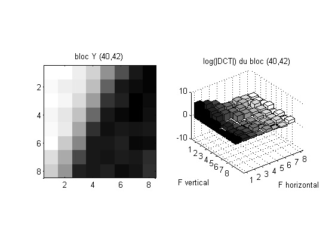
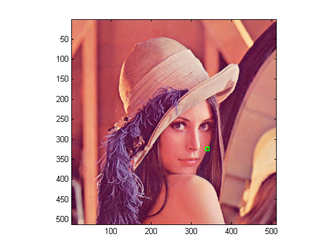
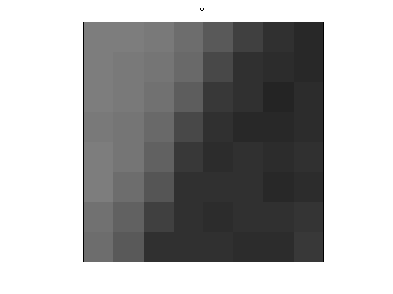
TRACE DES BASES
if(M==8) plot_bases(M,10,'gray2d'); end
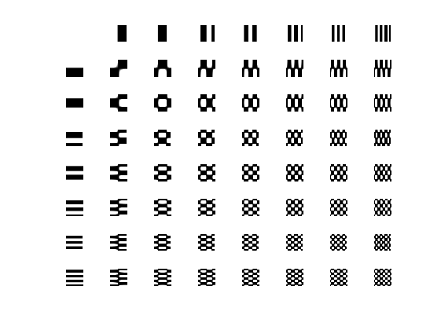